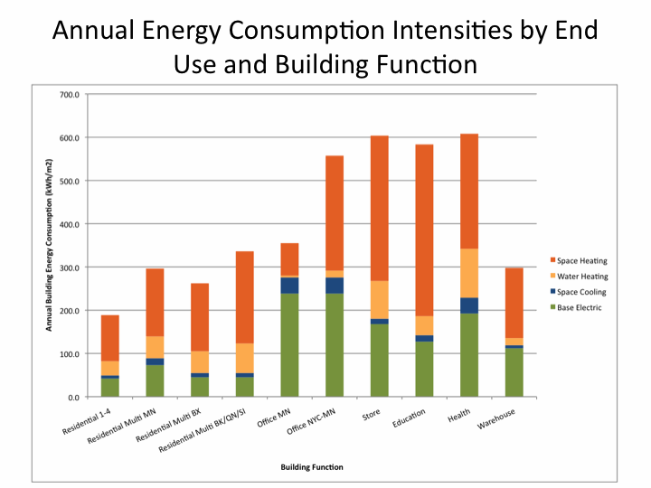

Thank you for visiting the New York City Building Energy Map! The map provides an estimate of the building energy consumption ("delivered" energy as opposed to "primary" energy) throughout New York City. The estimate is specific to the weather of New York, specific to the particular function of the building and specific to the built-up area of the building. This page describes how energy usage was estimated. This site was developed as part of a NSF IGERT funded research project in the School of Engineering and Applied Science at Columbia University
The annual building energy consumption was estimated using ZIP code-level energy usage, on electricity, natural gas, fuel oil and steam consumption for the year 2009 as well as building information obtained from MapPLUTO (a NYC Department of City Planning geographic database). With these two data sources through statistical regression we were able to estimate annual energy usage intensities (see the link to the study below the map for more detailed methodology). Energy usage intensity (EUI), is annual energy consumption divided by the total building floor area. These are "delivered" energy intensities and not "primary" energy intensities. This distinction is critical since "primary" energy utilized to produce electricity can vary with the type of power plant.
These intensities were specific to the following building functions:
In addition, Residential multi-family estimates for Manhattan and Bronx are specific to those boroughs. Office estimates for Manhattan are specific only to Manhattan.
Energy intensities were first estimated for electricity and for all fuels (including steam supply). We used the data from the residential energy consumption survey (RECS) and the commercial building energy consumption survey (CBECS) to break the energy use down into specific end uses:
Note: It was assumed that cooling is provided from electricity and all heating is provided from fuels or steam.
The "tax lot" level estimates were for each of these end uses and for each building function listed above.
The map displays no data for building areas not classified in the referenced databases.
The figure below shows the EUI estimates by building type:

Finally, for visualization purposes only, the energy use was normalized by the tax lot land area. The tax lot level caption also provides the built-up area of the buildings on the tax lot. So one can also easily compute the energy use based on the built-up area if one needs that estimate.
The map provides an estimate of building energy consumption. Take a typical building on an avenue in Manhattan. Often, the first floor is used for a store and theremaining floor area is office or residential. Our map shows that, if this building has 10,000 square meters of floor area, the first floor is used for stores and the rest is used for residential. On average, this building consumes 3.2 million kWh.
The map is not based on building-specific data. The map does not represent buildings that may be more or less efficient than others. An efficient building may use less than portrayed on the map and a less efficient building may use more. We encourage users to compare their buildings, but keep in mind that many factors affect a building's energy usage.
Map created by the Modi Research Group using MapBox